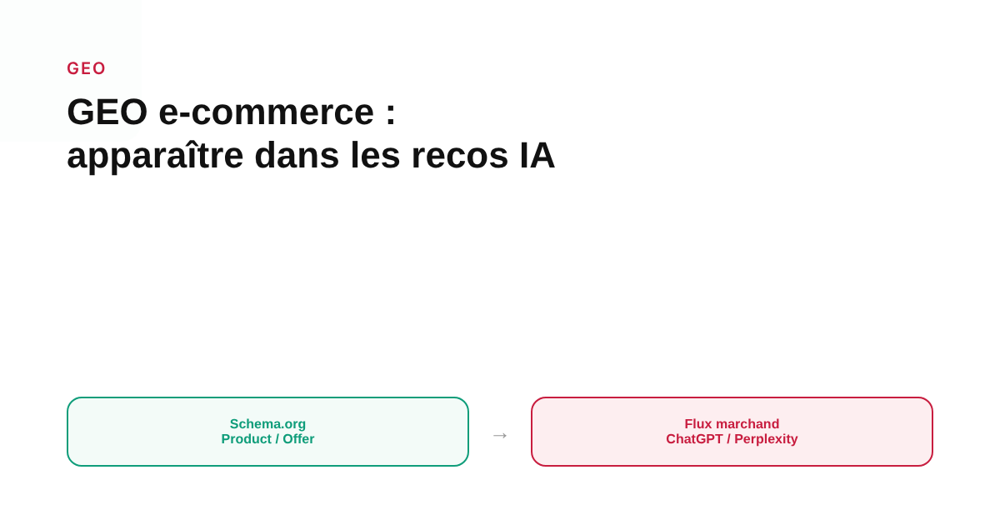
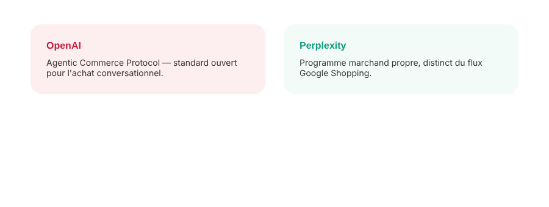

GEO pour l'e-commerce : apparaître dans les recommandations produit de ChatGPT et Perplexity
Un flux Google Shopping impeccable ne garantit pas qu'un produit apparaisse quand un client demande une recommandation à ChatGPT ou à Perplexity. Les deux assistants ne piochent pas leurs données au même endroit — ni selon la même logique.

Quand un client type « quel aspirateur robot sous 300 € » dans ChatGPT au lieu de Google, la question qui compte pour un e-commerçant n'est plus seulement « mon flux Shopping est-il bon ? » mais « d'où vient réellement ce que l'assistant répond ? ». Les sources disponibles sur le sujet, essentiellement des guides et agences spécialisées en GEO plutôt que de la documentation officielle complète, dessinent un paysage encore mouvant, mais avec des points d'ancrage assez cohérents entre eux.
ChatGPT : plusieurs circuits de données qui coexistent
Plusieurs analyses rapportent que les produits affichés dans les réponses shopping de ChatGPT recoupent fortement les résultats organiques de Google Shopping — un recoupement élevé est avancé par certaines études, sans qu'on puisse confirmer la méthode exacte avec certitude depuis ces seules sources secondaires. D'autres guides affirment que ChatGPT s'appuie en réalité sur les flux soumis au Bing Merchant Center de Microsoft : un site absent de ce circuit resterait invisible pour ce canal précis, quel que soit le soin apporté à son flux Google. OpenAI a par ailleurs mis en place un circuit propre, l'Agentic Commerce Protocol, qui permet une syndication plus directe du catalogue — Shopify propose une intégration de ce type via ses « Agentic Storefronts ». Ces pistes ne s'excluent pas forcément entre elles : elles suggèrent plusieurs portes d'entrée possibles plutôt qu'un canal unique et documenté par OpenAI lui-même de façon exhaustive.
Perplexity : un programme marchand, et une dépendance plus forte au web ouvert
Perplexity propose de son côté un programme marchand permettant de soumettre directement un catalogue structuré, incluant prix, avis et disponibilité. Mais plusieurs sources spécialisées décrivent aussi un moteur qui s'appuie davantage sur le crawl classique du web et les signaux de données structurées publiées sur les pages produit elles-mêmes, en complément des avis tiers. Cette double dépendance — programme marchand dédié et exploration classique du site — distingue Perplexity d'un système qui reposerait uniquement sur un flux soumis.

Le socle commun : des données structurées propres, cohérentes avec la page produit
Au-delà des circuits propres à chaque plateforme, un socle technique revient dans la quasi-totalité des guides consultés : un balisage Schema.org complet sur chaque page produit (Product, Offer, Review, AggregateRating), des identifiants GTIN ou MPN qui permettent de rattacher le produit à des bases de données reconnues au-delà du site lui-même, et surtout une cohérence stricte entre le prix affiché dans un flux et celui affiché sur la page : un guide signale qu'un écart de prix ou un mauvais format de devise (la norme ISO 4217 est citée) peut suffire à faire rejeter un produit par ChatGPT. C'est un socle d'hygiène technique qui profite à plusieurs canaux à la fois, indépendamment du flou qui persiste sur le détail exact de chaque algorithme.
Ce qu'il faut garder en tête avant d'investir du temps
La prudence s'impose sur un point : la quasi-totalité des informations disponibles sur ce sujet vient d'agences et d'outils qui vendent des services d'optimisation GEO, pas de documentation officielle exhaustive d'OpenAI ou de Perplexity. Les règles précises évoluent vite, et certaines affirmations circulant sur des mécanismes internes (comme des paramètres techniques repérés dans le code de ChatGPT) n'ont pas pu être vérifiées de façon indépendante dans le cadre de cet article. La priorité raisonnable reste de sécuriser le socle de données structurées, vérifiable et stable, plutôt que de courir après chaque signal non confirmé.
FAQ
Suffit-il d'avoir un flux Google Shopping bien optimisé pour apparaître dans ChatGPT ?
Non, pas de façon garantie. Plusieurs analyses indépendantes indiquent que les recommandations produit de ChatGPT s'appuient en partie sur des flux marchands soumis au Bing Merchant Center de Microsoft, distincts de Google Shopping, ainsi que sur des mécanismes propres à OpenAI comme l'Agentic Commerce Protocol. Un site absent de ces circuits peut rester invisible même avec un excellent flux Google Shopping.
Perplexity fonctionne-t-il de la même façon que ChatGPT pour les recommandations produit ?
Pas tout à fait. Perplexity propose un programme marchand permettant de soumettre un catalogue structuré incluant prix, avis et disponibilité, mais s'appuie aussi fortement sur le crawl du web et les données structurées publiées directement sur les pages produit (Product, Offer, Review, AggregateRating), en complément des signaux tiers comme les avis clients.
Quelles données structurées sont les plus citées comme utiles pour le GEO e-commerce ?
Les balisages Schema.org Product, Offer, Review et AggregateRating reviennent dans la majorité des guides spécialisés, accompagnés des identifiants GTIN ou MPN qui permettent de rattacher un produit à une base de données reconnue. Plusieurs sources insistent aussi sur la cohérence stricte entre le prix affiché dans le flux et celui affiché sur la page produit, au format de devise ISO 4217.
Envie de structurer votre catalogue produit pour les assistants IA autant que pour Google ?
Pour aller plus loin, voir la page GEO, et l'article Achat direct dans ChatGPT, Perplexity, Google AI Mode.
Pour continuer sur ce sujet.